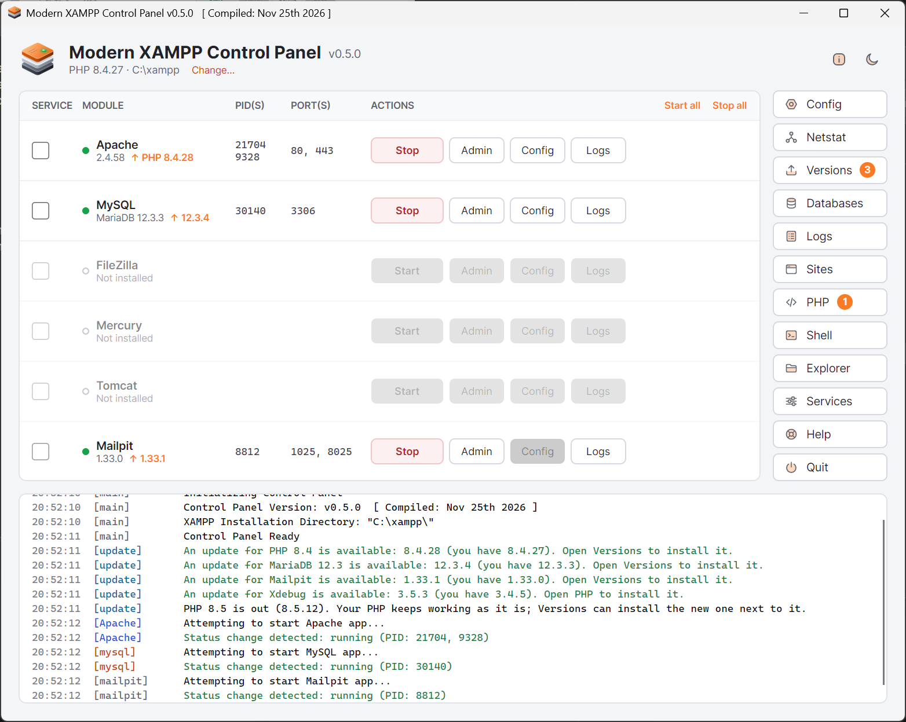
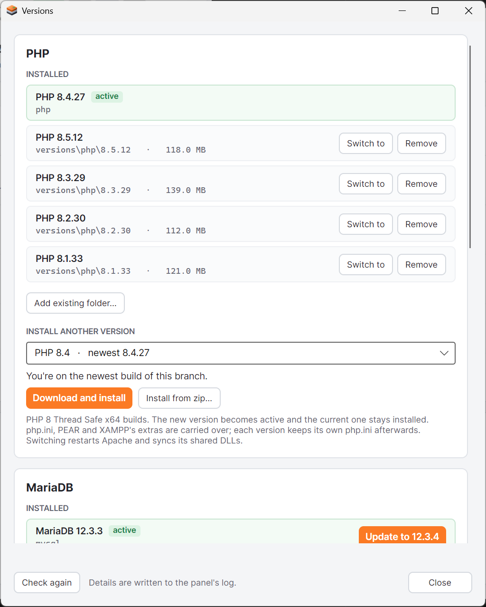
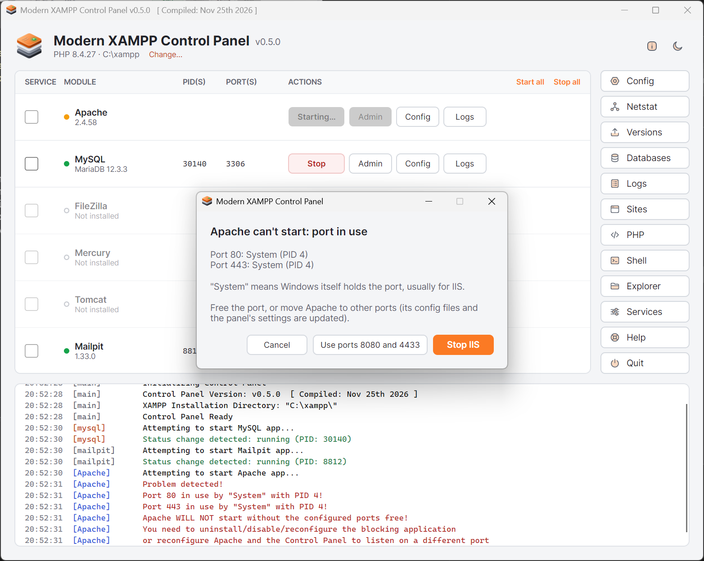
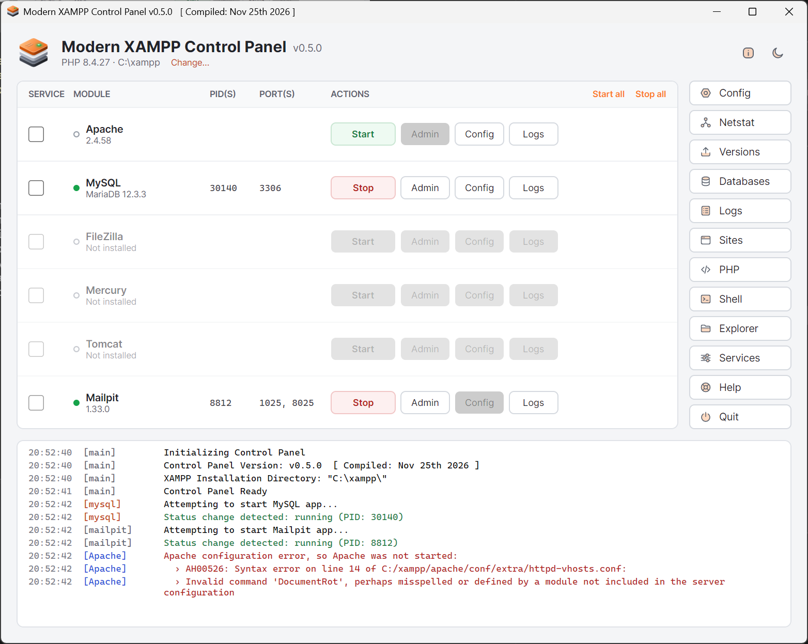
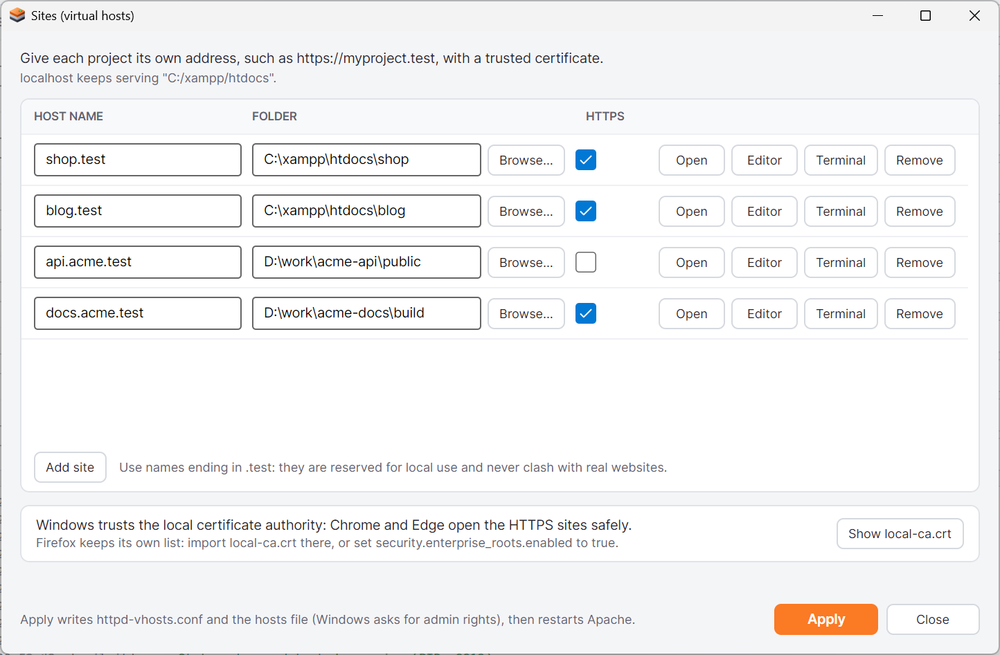
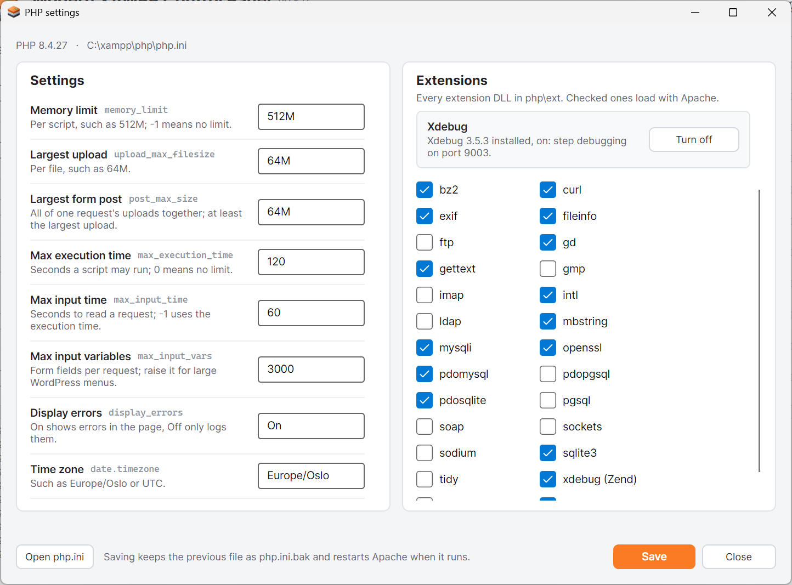
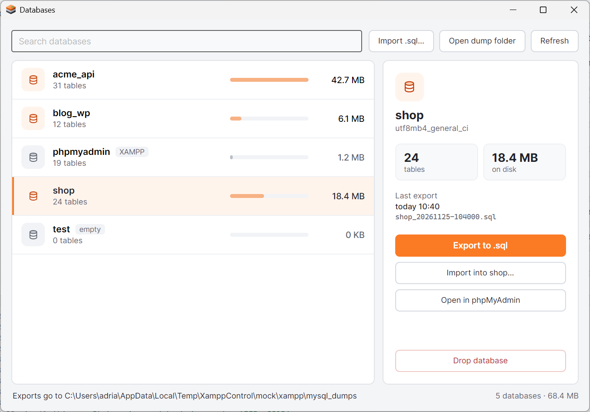
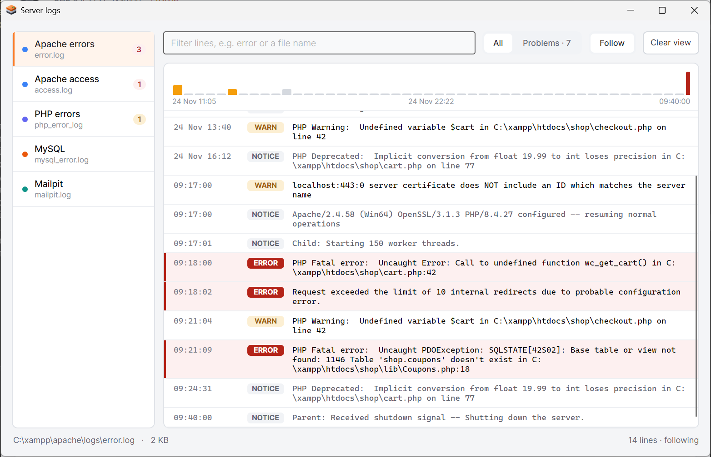
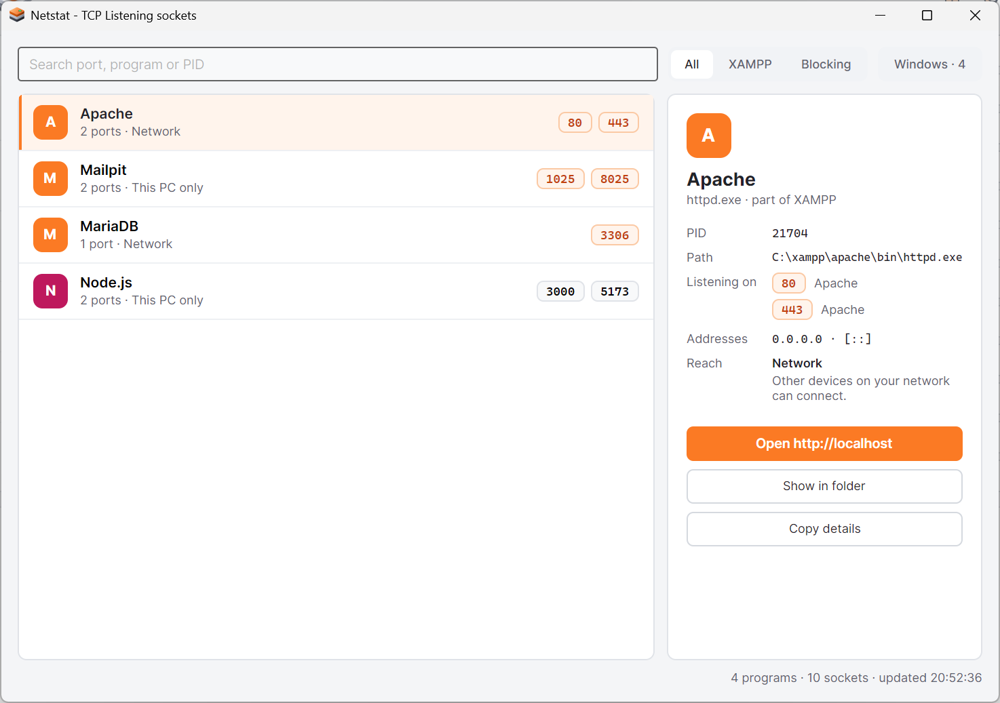

for XAMPP on Windows[main]Control Panel Ready
The control panel XAMPP should have shipped with.
The layout you already know, with the parts that hurt fixed: databases that survive a Stop, errors that say what is wrong, and PHP versions you can change.
Free · open source (MIT) · one signed .exe · no installer

[diff]xampp-control.exe → XamppControl.exe
Same rows. Different answers.
Nothing to relearn. The buttons are where they were; what changes is what happens when you press them.
When you…
The stock panel
This panel
Stop MySQL
ends the process
asks MariaDB to shut down and waits, so InnoDB finishes writing
Start a server that won't
"shutdown unexpectedly"
tests Apache's config first and names the broken line; otherwise shows the end of the error log
Hit a taken port
a generic warning
names the program and PID, then offers to end it, stop IIS, or move the module
Need another PHP
reinstall XAMPP
install, update, switch and roll back from the official builds
Want https://myproject.test
edit vhosts and hosts by hand
one Apply: virtual host, hosts entry, and a certificate Windows trusts
Send mail from PHP
goes nowhere, or everywhere
Mailpit catches every message at localhost:8025
Do anything as admin
a prompt per action
one prompt per session
[tour]8 stops, every picture is the app itself
What a day with it looks like.
09:18:12[update]8.5.13 is available
It tells you when there is an update
At startup, and once a day, the panel looks for newer builds of the PHP, MariaDB, Mailpit and Xdebug you have installed. The whole notice is a count on Versions and an arrow on the row.
- Only your branch: PHP 8.5 hears about 8.5.x
- A new branch is news, said once
- Silent when you are offline

09:21:40[update]PHP 8.5.13 is installed and active
Several PHP versions, side by side
Install another PHP from the official builds with its checksum verified, switch between installed versions in seconds, and update the active one with a single button.
- Your php.ini and extensions carry over
- Switch back after any install
- MariaDB works the same way, each version with its own copy of your data

09:30:02[Apache]Port 80 in use by System (PID 4)
Port conflicts, solved
When something else holds port 80 or 443, the panel says what it is and offers the fix instead of a riddle.
- End the program that holds the port
- Stop IIS when Windows itself is the one
- Or move Apache to a free port, config updated for you

09:41:17[Apache]Syntax error on line 14 of httpd-vhosts.conf
Errors you can read
Apache's config is tested before it starts. A typo shows up as the file and the line, in the panel, and Apache is not started into a crash.

10:02:55[sites]https://shop.test is ready
Local sites with HTTPS
Give a folder a name like shop.test and press Apply. The panel writes the virtual host, the hosts entry and a certificate from a local authority Windows trusts.
- The browser shows the padlock
localhostkeeps serving htdocs- Editor and Terminal buttons per site

10:15:31[php]Xdebug 3.5.3 installed, debug mode on
PHP settings and Xdebug
The settings everyone changes, every extension as a checkbox, and Xdebug installed with one click in the build that matches your PHP: version, thread safety and compiler.

10:40:08[mysql]Exported shop to shop_20261125-104008.sql
Databases at a glance
Every database with its size, and the chosen one beside the list: tables, collation and its last export. Export to a timestamped .sql file, import, or drop one without opening a browser.
- Drop says what it deletes before it does
- phpMyAdmin is one click away, and Apache is started for you

10:52:19[apache]error.log: 3 errors since yesterday
Logs in one place
Every server log in one window, each with a count of its recent errors, so you know which one to open. Lines are split into time, level and message instead of one long string.
- A timeline shows when things went wrong; click to jump there
- "Problems" hides everything but warnings and errors
- Follows the file live, like
tail -f

11:03:44[netstat]22 listening sockets
See what listens where
Every listening port with the program behind it and what the port is for. XAMPP's own are marked, and anything standing in the way of Apache or MySQL is called out.

[main]Initializing Control Panel
Running in a minute.
Needs Windows 10 or 11 (x64) and a XAMPP for Windows of any recent version. The original panel keeps working; use them side by side for as long as you like.
- Download the zip
One file,
XamppControl.exe, signed and self-contained. No installer and no runtime to install. - Put it anywhere
Next to
xampp-control.exeinC:\xamppis the obvious place, but any folder works. - Run it
It finds XAMPP in its own folder, the folder above, or
C:\xampp, and asks if it is somewhere else.
[guides]the errors everyone searches for
Stuck on one of these right now?
These guides give the manual fix for the XAMPP you have today. No download needed.
Error: MySQL shutdown unexpectedly.
This may be due to a blocked port, missing dependencies…MySQL shutdown unexpectedlyRead the real error, then repair the data files without losing your databases.
Port 80 in use by "Unable to open process" with PID 4!
Apache WILL NOT start without the configured ports free!Port 80 in use by PID 4Find what holds the port, stop it, or move Apache somewhere else.
Your Composer dependencies require a PHP version ">= 8.4.0".
You are running 8.2.12.Change the PHP version in XAMPPSwap the PHP folder by hand without breaking Apache, php.ini or curl.
NET::ERR_CERT_AUTHORITY_INVALID
Your connection is not privateHTTPS for local sitesA real padlock on myproject.test: a local authority, a certificate, a virtual host.
[help]asked before downloading
Fair questions.
Does it replace XAMPP?
No. It replaces only the control panel, the window with the Start and Stop buttons. Apache, MariaDB, PHP and your projects stay exactly where they are, and the original xampp-control.exe keeps working next to it.
Does it change anything in my XAMPP folder?
Not until you ask. Starting and stopping changes nothing. Installing a PHP or MariaDB version, adding a site or moving a port edits the files that job needs, keeps a backup where that makes sense, and says in the log what it did.
Is it official?
No. It is an unofficial, community project by CC Software, not affiliated with or endorsed by Apache Friends. The source is on GitHub under the MIT license.
Windows says "unrecognized app". Is that normal?
For a small project, yes: SmartScreen warns about any program it has not seen many times yet. Releases are code-signed, and the reference shows how to check the signature. Choose More info › Run anyway.
Will my databases be safe during a MariaDB update?
The new version starts with a copy of your databases, made after a full clean shutdown. The previous version keeps its own untouched copy, so switching back gives you the exact state from before the update.
Which languages does it speak?
English and Norwegian Bokmål are built in. A language is a single JSON file, so adding yours is a small pull request.
[main]Control Panel Ready
Keep XAMPP. Change the panel.
One file next to the XAMPP you already have. If you don't like it, delete the file; nothing else was touched.